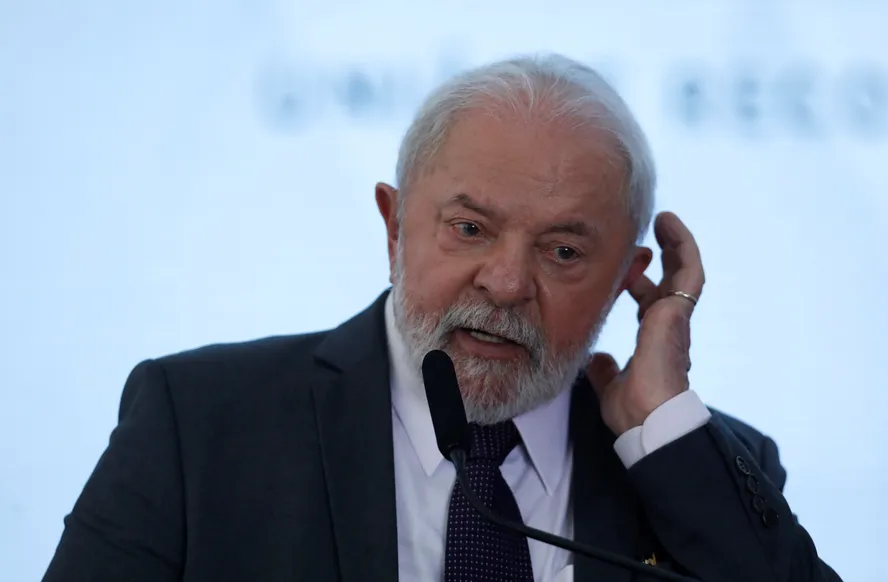

Lula, que já estudou recorrer ao TPI, diz que 'nem sabia da existência' do tribunal

"Eu nem sabia da existência desse tribunal", disse o petista, acrescentando que pretendia investigar a razão pela qual o Brasil era signatário do Estatuto de Roma, tratado fundador da corte, enquanto grandes potências como Estados Unidos e China não eram. "Me parece que os países do Conselho de Segurança da ONU não são signatários, só os 'bagrinhos'", completou. Na verdade, dos cinco membros permanentes do Conselho de Segurança, EUA, Rússia e China não aderiram ao TPI. França e Reino Unido, porém, são signatários do Estatuto de Roma e membros da corte. No total, a instituição reúne 123 países.
África do Sul criou precedente, em 2015, ao desafiar o TPI e receber o ditador do Sudão
Em 2015, contudo, a África do Sul criou um precedente, desafiando claramente o TPI: sob o governo de Jacob Zuma, recebeu o então ditador do Sudão, Omar al-Bashir, que tinha dois mandados de captura expedidos por crimes contra a Humanidade em Darfur. Ele participou da reunião de cúpula da União Africana, mas o governo de Zuma permitiu que fugisse do país depois que um tribunal local decidiu sobre a sua prisão.